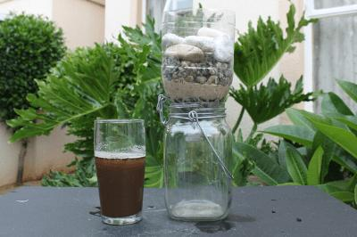
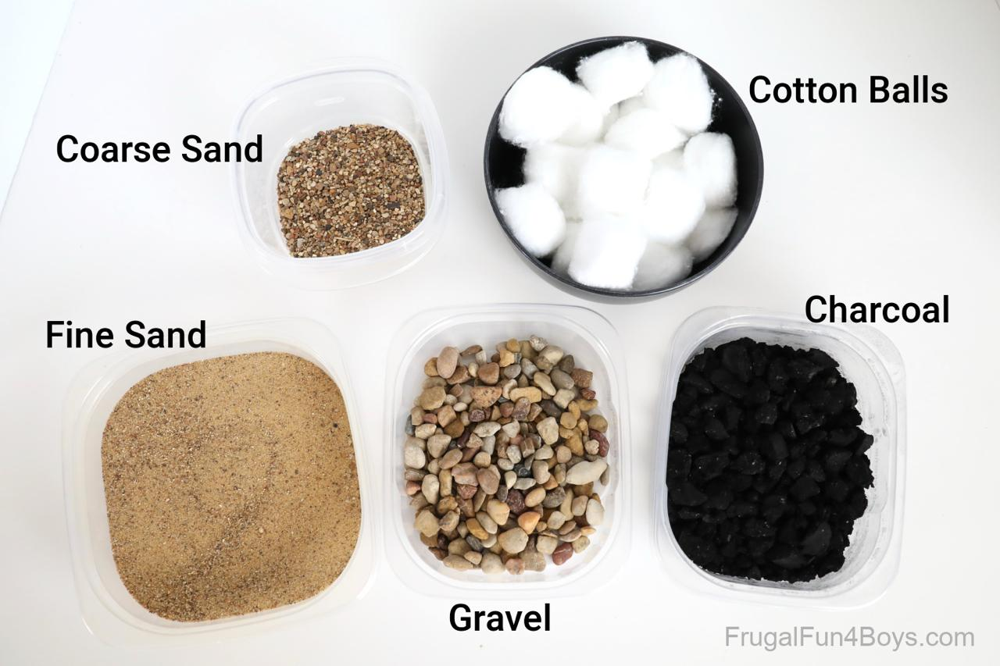
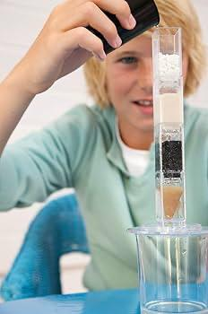
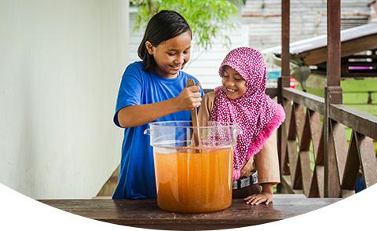

Experiment 5: Water Purification
Clean Water with Nature’s Help!
Did you know you can filter dirty water using simple household materials? In this experiment, you’ll create your own water purification system and learn how natural filters work to make water clean and safe.

What You’ll Do
You’re going to layer materials like sand, gravel, and charcoal to build a water filter. This experiment demonstrates how impurities are removed from water, mimicking processes used in real water treatment plants.

What You’ll Need
- Plastic bottle: Cut the bottom off to use as the filter holder.
- Charcoal: Break it into small pieces to absorb impurities.
- Sand: Helps trap fine particles.
- Gravel: Removes larger debris.
- Cotton or coffee filter: Acts as the first barrier.
- Dirty water: Make your own by mixing soil or dirt with water.
- Clean container: To collect the purified water.

Steps to Follow
-
Prepare Your Filter:
- Cut the bottom off a plastic bottle. Turn it upside down so the neck is at the bottom.
- Place a piece of cotton or a coffee filter inside the bottle neck.
-
Layer the Materials:
- Add a layer of gravel on top of the cotton.
- Next, add a layer of sand, then a layer of charcoal.
- Repeat the layers if you have extra materials.
-
Test Your Filter:
- Pour dirty water slowly into the top of the filter.
- Watch as clean water drips out the bottom into your container.
What’s Happening?
Here’s the science behind it:
- Charcoal: Absorbs impurities and improves taste.
- Sand and Gravel: Remove larger and smaller particles through physical filtration.
- Cotton or Coffee Filter: Traps fine debris to prevent it from passing through.
Try These Fun Variations
- Test other materials like sponges, cloth, or pebbles.
- Compare the clarity of water filtered through different setups.
- Research natural water purification methods and replicate them.
Tips for Success
- Pour water slowly to avoid disturbing the filter layers.
- Use fine sand for better filtration.
- Don’t drink the filtered water without boiling or additional purification.

Why It’s Cool: This experiment demonstrates how natural resources can be used to purify water, an essential process for communities worldwide.